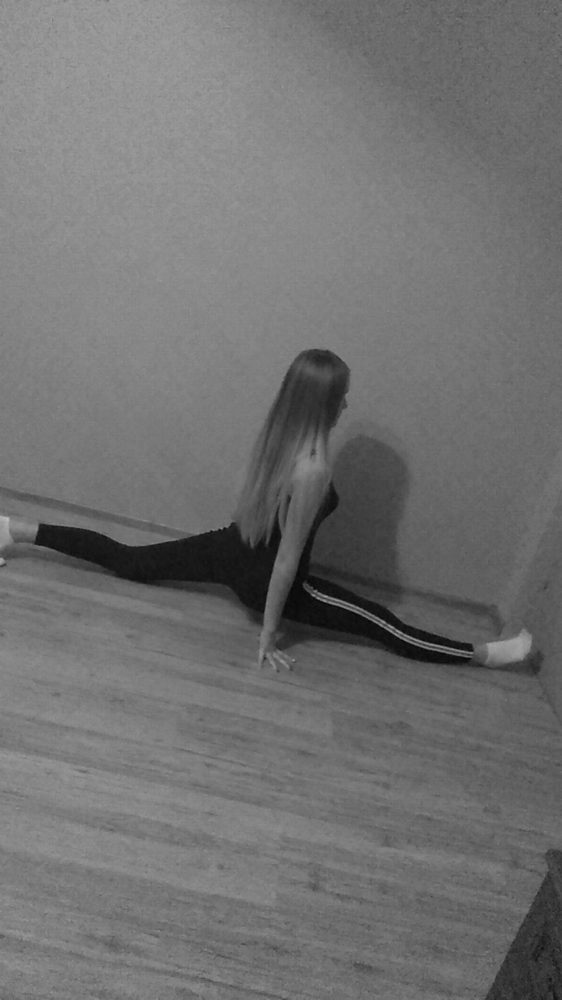
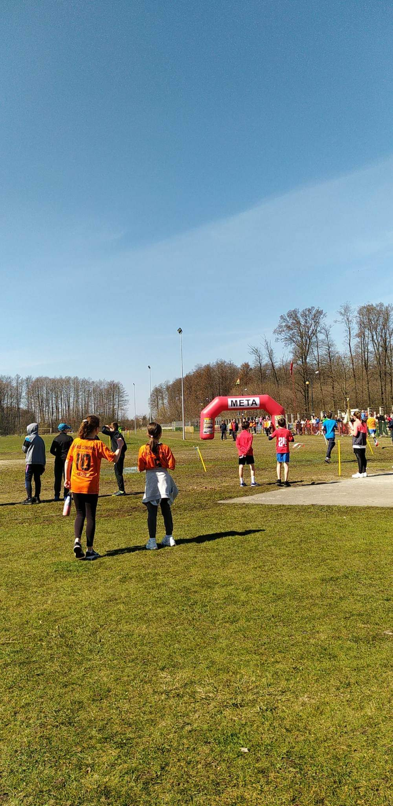
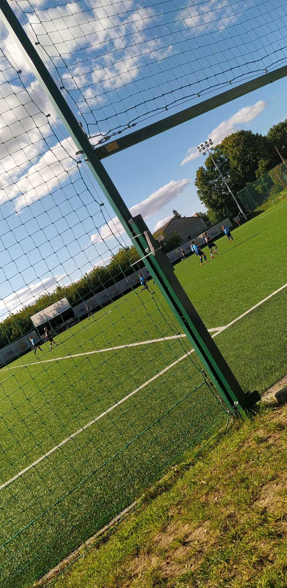
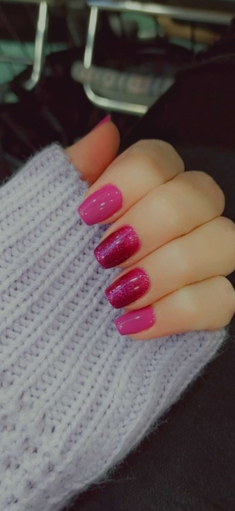
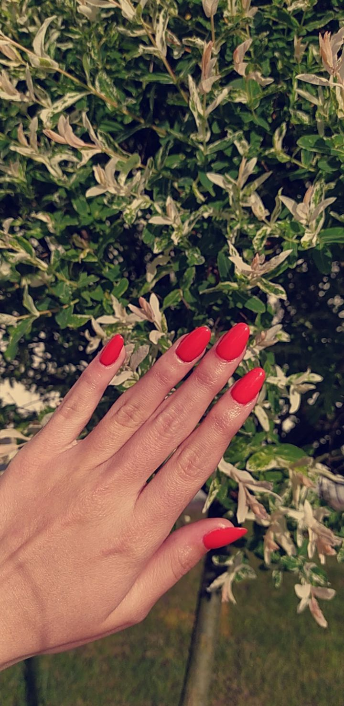
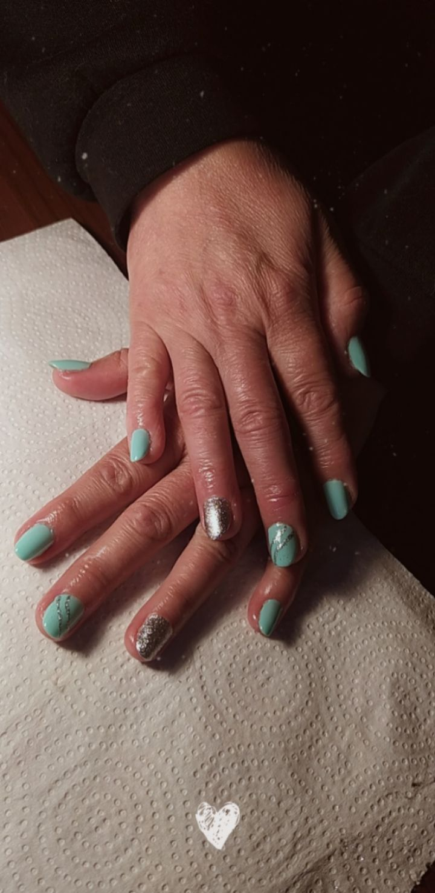
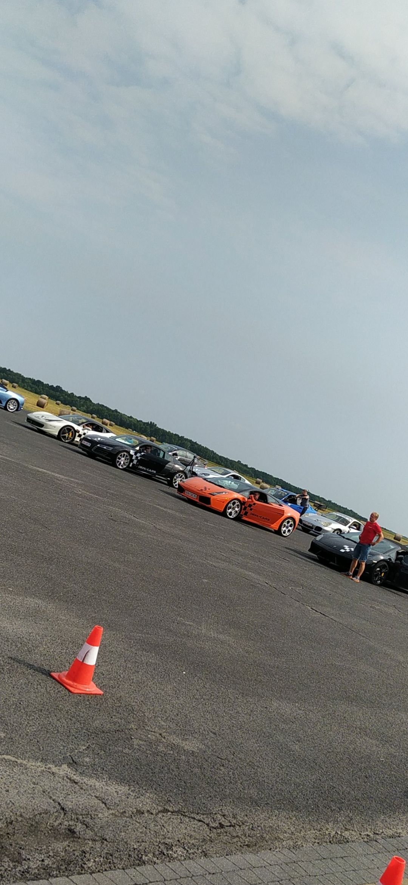
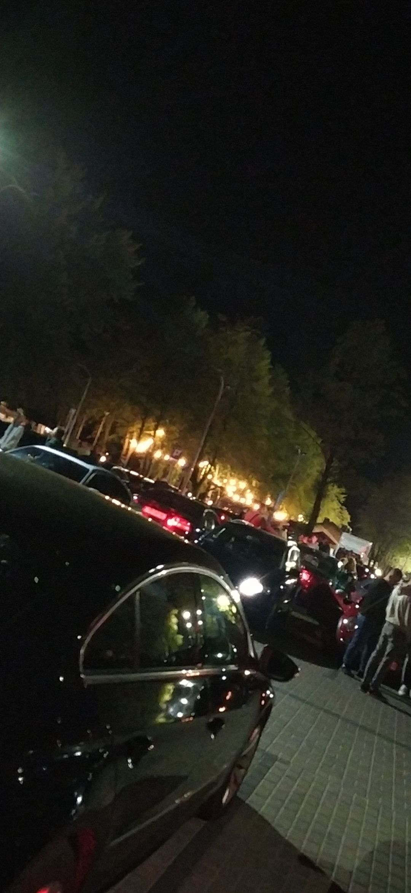

Temat o zainteresowaniach postanowiłam bardziej rozwinąć, gdyż uważam, że jest on dosyć ciekawy i może stanowić inspirację dla innych.
Pierwsze miejsce na liście moich pasji zajmuje sport, który sprawia mi największą przyjemność. Aktywność fizyczna od zawsze była mi bliska i nie sprawiała problemu. Uwielbiam bieganie, gimnastykę, pływanie, piłkę nożną oraz jazdę na rolkach i rowerze. Gdy uczęszczałam do gimnazjum i szkoły średniej, brałam aktywny udział w wydarzeniach sportowych organizowanych w mojej szkole i poza nią. Były to najczęściej biegi i turnieje piłki nożnej. Posiadam wiele dyplomów i medali z tamtych czasów. W szkole licealnej uczęszczałam na zajęcia pozalekcyjne związane ze sportem- lekkoatletykę i treningi piłki nożnej. Również w domu wieczorami lubiłam sobie poćwiczyć. Największą satysfakcję sprawiało mi rozciąganie się, gdyż chciałam osiągnąć swój cel, któym był szpagat. Mimo dużego wysiłku i determinacji udało mi się odnieść sukces. Razem z koleżanką, która podziela moją pasję jaką jest jazda na rolkach i rowerze, organizowałyśmy sobie wycieczki do pobliskich miejscowości, liczące po kilkanaście kilometrów. Moja przygoda ze sportem zaczęła się od dzieciństwa i napewno będzie jeszcze długo trwać. Poniżej zamieszczam kilka zdjęć z mojego sportowego życia.
  Kolejną pasją, którą chcę uwzględnić jest taniec. Gdy byłam w szkole podstawowej, mama zapisała mnie na zajęcia taneczne. Było to wspaniałe doświadczenie, które na długo zostanie w mojej pamięci. Obecnie również rozważam zapisanie się na taniec nowoczesny lub towarzyski.
Następną czynnością, która sprawia mi przyjemność jest robienie paznokci . Potrafię wykonać manicure hybrydowy, jak i przedłużanie żelem. Paznokcie najczęściej robię sobie, mamie, siostrze i koleżankom. Oto kilka moich prac:
  Kolejnym moim zainteresowaniem jest motoryzacja. Lubię popatrzeć na ładne i szybkie samochody. Razem ze swoim chłopakiem chętnie biorę udział w różnych zlotach i wydarzeniach motoryzacyjnych. Poniżej zdjęcia z dwóch event'ów:
 Uwielbiam również chodzić na imprezy plenerowe, takie jak festyny, koncerty i dożynki. Podczas tych wydarzeń spotykam się ze znajomymi i razem spędzamy czas świetnie się bawiąc.